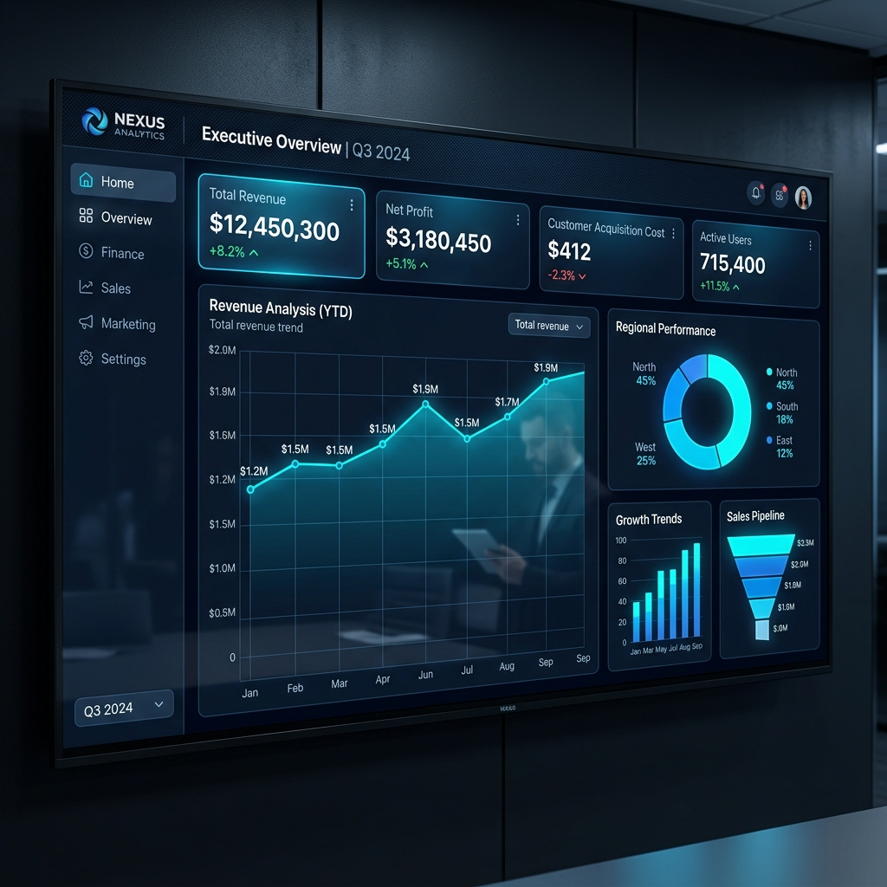
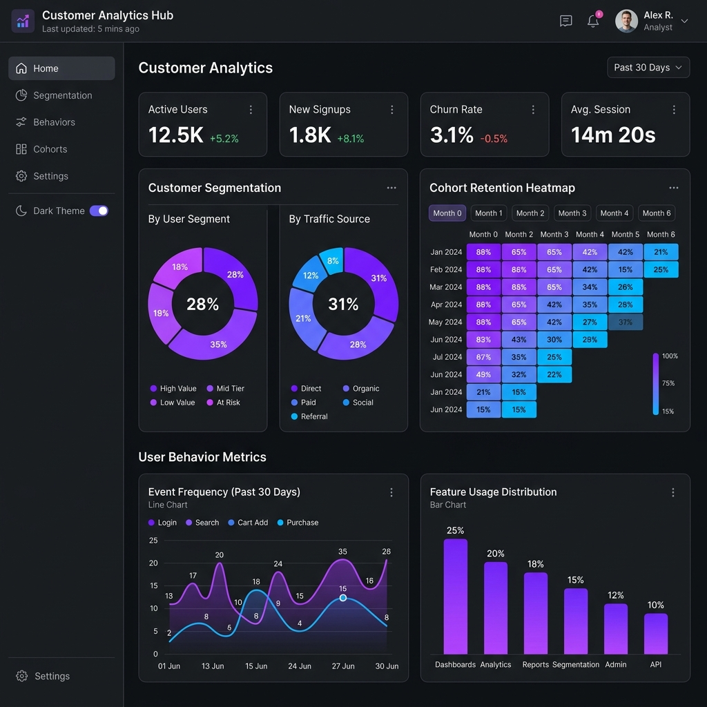
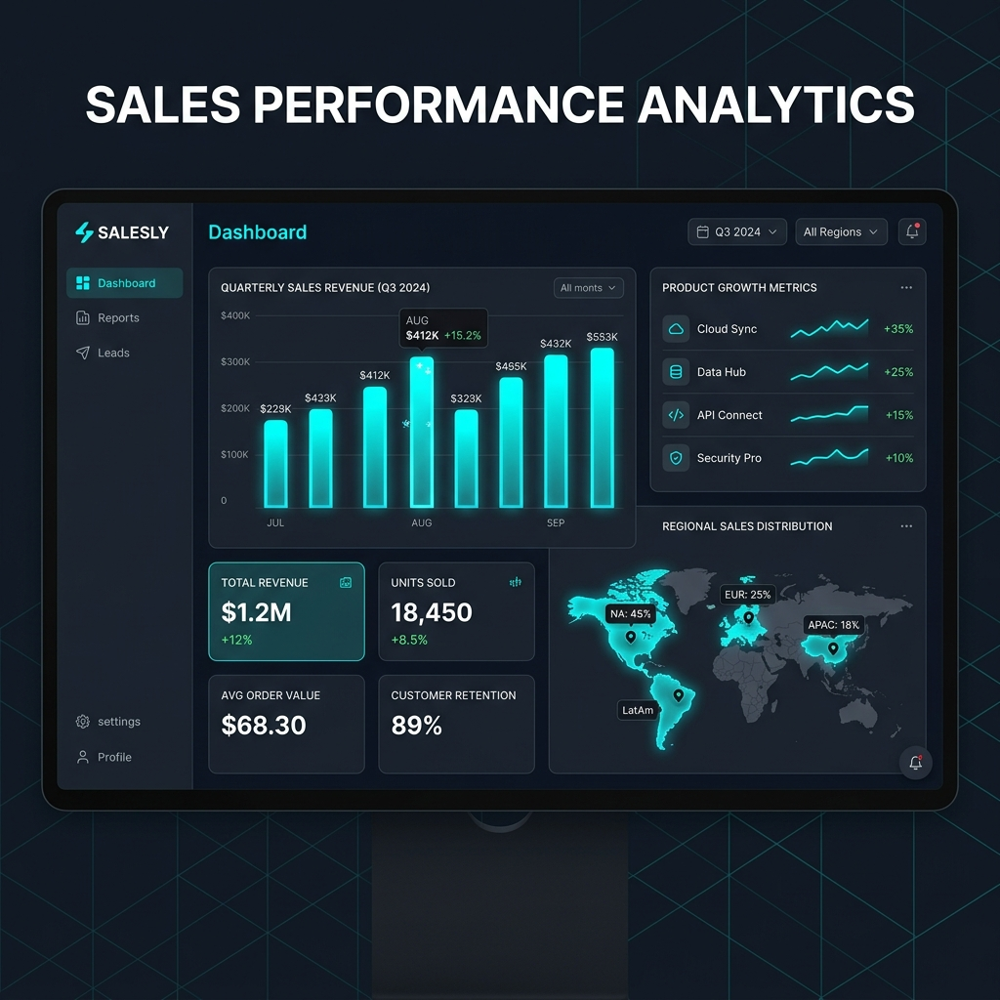

Kavish Koradia
Data Analytics Professional | Business Intelligence | Data-Driven Decision Making
Turning Complex Data Into Clear, Actionable Decisions.
Kavish Koradia is a results-driven data analytics professional with 5 years of experience transforming complex datasets into meaningful insights, interactive dashboards, business intelligence solutions, and data-driven strategies.
0+
Years Experience
0+
Analytics Projects
0+
Dashboards Created
0+
Business Insights
0+
Analytics Tools
About Kavish
Kavish Koradia brings a powerful combination of data analysis, business intelligence, statistical thinking, programming, data visualization, and business problem solving to every data challenge.
With 5 years of professional analytical exposure, Kavish specializes in managing structured and unstructured datasets, evaluating core business KPIs, establishing robust reporting systems, architecting end-to-end ETL workflows, developing executive BI dashboards, and applying predictive analytics to empower data-driven business leadership.
ETL & Data Cleaning
Transforming raw data feeds into sanitized, relational database schemas.
BI & Executive Dashboards
Building automated Power BI & Tableau visual KPI frameworks.
Kavish Koradia
Analytics Profile Card
Verified Data AnalystAnalytics Toolkit
Categorized technical stack and analytical methodologies across 8 domains.
Data Analysis
Databases
Business Intelligence
Data Visualization
Programming
Data Engineering / ETL
Statistical Analysis
Development
Professional Experience
Data Analytics Professional
Enterprise Data & Business Intelligence Specialist
Leading end-to-end data analytics initiatives, transforming complex multi-source operational datasets into business intelligence frameworks, executive dashboards, and automated reporting systems.
- Analyzing complex enterprise business datasets to extract actionable growth drivers.
- Building automated reports & executive interactive dashboards in Power BI and Tableau.
- Developing comprehensive KPI frameworks and performance scorecards.
- Cleaning, transforming raw data, and executing exploratory data analysis (EDA).
- Formulating high-performance SQL queries for database extraction and ETL workflows.
- Identifying trends, anomalies, and delivering presentations to executive stakeholders.
Academic Experience
Hands-on academic projects, software engineering work, and data research experience.
Academic Projects
Applied multivariate statistical methods and exploratory data analysis to complex public demographic and economic datasets.
Technical Research
Conducted empirical data research evaluating machine learning algorithms and statistical model evaluation techniques.
Data Analysis
Engineered custom Pandas & NumPy workflows for missing-value handling, outlier detection, and correlation hypothesis testing.
Programming Projects
Developed relational database schemas in SQL and web dashboard prototypes using modern JS and Python libraries.
Technical Presentations
Delivered analytical findings, slide decks, and data storytelling to faculty, peers, and technical panels.
Engineering Projects
Engaged in practical laboratory experiments, structured software engineering design, and algorithmic problem solving.
Featured Projects
Interactive data solutions, executive BI dashboards, and statistical models.

Power BI & SQLExecutive Business Intelligence Dashboard
Interactive Power BI dashboard transforming raw multi-source business data into executive-level insights, revenue trends, and dynamic KPI monitoring.

Python & MLCustomer Behavior & Segmentation Analysis
RFM segmentation and K-Means clustering algorithm in Python to analyze purchase behavior, retention curves, churn drivers, and customer lifetime value.

SQL & Power BISales Performance Analytics
Comprehensive sales KPI framework, product profitability matrix, regional breakdown, and sales rep quota tracker built on SQL stored procedures.
ETL_Cleaner_v4.py
Automated Data Cleaning & ETL Pipeline
End-to-end Python pipeline handling missing values, duplicate detection, schema standardization, and automated database loading across 4 SaaS sources.
How I Turn Data Into Decisions
A structured 6-phase analytical framework engineered for enterprise decision making.
Collect
Aggregation from APIs, SQL DBs & logs.
Clean
Sanitization, missing data & deduplication.
Explore
EDA, distributions & statistical checks.
Analyze
Segmentation, regression & trend modeling.
Visualize
Power BI dashboards & story decks.
Decide
Actionable strategic recommendations.
Dashboard Showcase
Switch between live BI domain views built with modern visualization aesthetics.
Quarterly Revenue & Profitability ($M)
Regional Revenue Contribution
Certifications & Credentials
Microsoft Power BI
Certified BISQL Database
Advanced QueriesPython Data
Pandas / EDAData Analytics
ProfessionalTableau
Desktop SpecialistAdvanced Excel
Power PivotStatistics
Applied ModelsKey Achievements
50+ Enterprise Projects
Successfully delivered high-impact data analysis across marketing, sales, and operational domain teams.
30+ BI Dashboards
Architected automated executive reporting dashboards reducing manual update overhead drastically.
Technical Presentations
Presented data storytelling decks, research findings, and executive performance metrics to leadership panels.
Academic Background
Higher Education Degree
[University / Institution Name Placeholder]
Focusing on Data Analytics, Applied Mathematics, Database Systems, Computer Science, and Business Intelligence principles.
Relevant Coursework & Studies
Let's Talk Data
Have a data analytics requirement, BI project, or strategic question? Reach out directly.
Get Direct Access
Connect with Kavish Koradia instantly via phone or WhatsApp for quick inquiries regarding data analytics consultation.